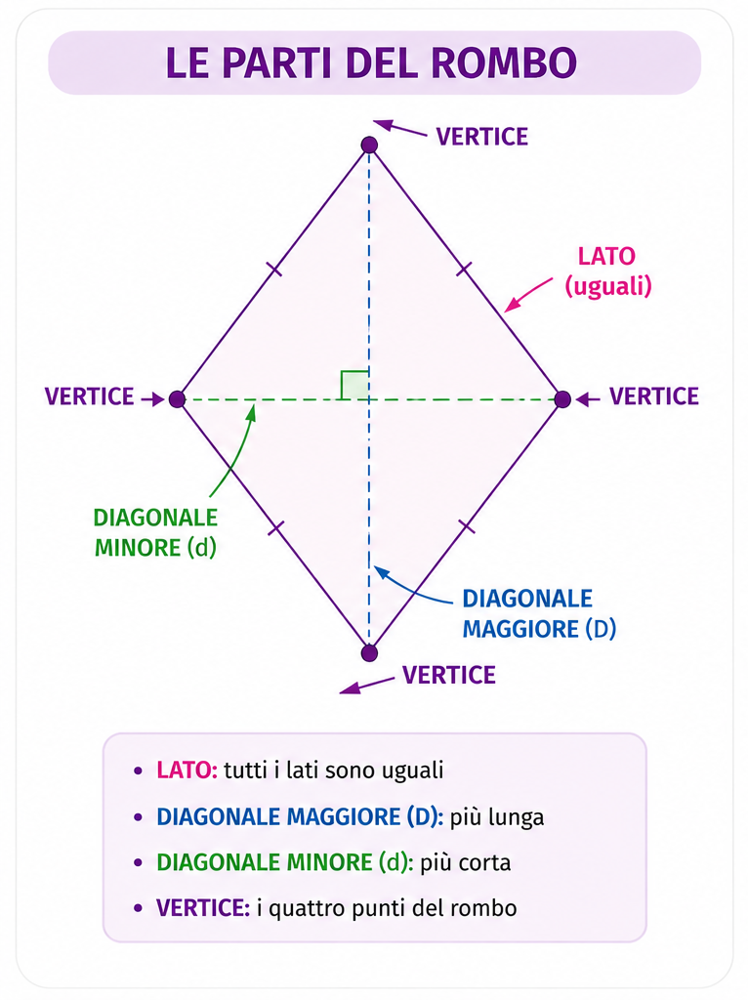
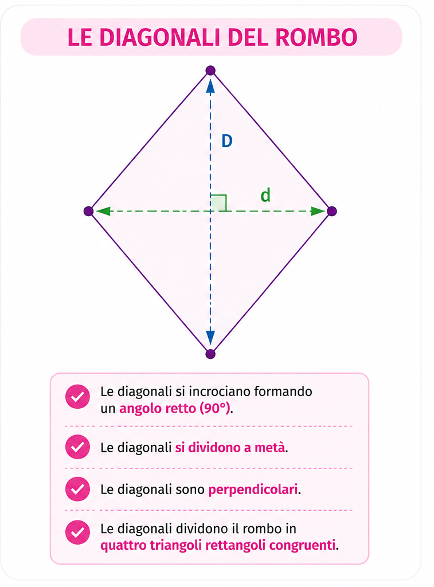

← Torna a Geometria
📐 GEOMETRIA
ROMBO
Conosci il rombo, le sue caratteristiche, il perimetro e l'area.
📖 Cos'è un rombo
Il rombo è un quadrilatero con
4 lati uguali.
Le diagonali si incrociano formando un angolo retto e si dividono a metà.

📏 Caratteristiche
- Ha 4 lati uguali.
- I lati opposti sono paralleli.
- Gli angoli opposti sono uguali.
- Le diagonali sono perpendicolari.
- Le diagonali si dividono a metà.

📏 Perimetro
Il perimetro è la somma dei quattro lati.
P = l × 4
Formula inversa
l = P ÷ 4
🟩 Area
L'area si calcola utilizzando le due diagonali.
A = (D × d) ÷ 2
Formula inversa della diagonale maggiore
D = (A × 2) ÷ d
Formula inversa della diagonale minore
d = (A × 2) ÷ D
📐 Le diagonali
Le diagonali del rombo sono:
- Perpendicolari.
- Si dividono a metà.
- Dividono il rombo in quattro triangoli rettangoli.
💡 Da ricordare
- ✅ Ha 4 lati uguali.
- ✅ I lati opposti sono paralleli.
- ✅ Perimetro = lato × 4.
- ✅ Area = (diagonale maggiore × diagonale minore) ÷ 2.
- ✅ Le diagonali sono perpendicolari.
🃏 Flashcards
Domanda
Quanti lati uguali ha un rombo?
Risposta
Quattro lati uguali.
Domanda
Come sono le diagonali?
Risposta
Sono perpendicolari e si dividono a metà.
Domanda
Formula del perimetro?
Risposta
P = l × 4
Domanda
Formula dell'area?
Risposta
A = (D × d) ÷ 2
Domanda
Quante diagonali ha un rombo?
Risposta
Due diagonali.